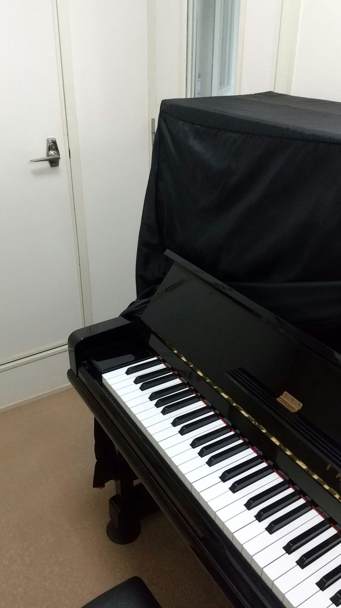

発表会の質に定評
特別な生徒さんではなく、気軽に習い始めた生徒さんたちが、ノビノビと成果を披露しています。東京芸大進学者や全日本学生音楽コンクール大阪大会優勝者も。
About
愛育（あいく）音楽教室は、お子様の音楽指導一筋にノウハウを蓄積してきたピアノ教室です。個性・能力・環境・ご要望に応じて、ゆっくりマイペースな方にも完全対応しています。
レッスンは夫婦2人で担当。音大卒業後はプロの吹奏楽団で夫はホルン、妻はファゴットの奏者でした。小さな物置小屋のような場所から始めた教室は、発表会の内容や口コミで生徒数80名を超えるまでになりました。四国大学音楽科の非常勤講師も約10年務めています。
Features
特別な生徒さんではなく、気軽に習い始めた生徒さんたちが、ノビノビと成果を披露しています。東京芸大進学者や全日本学生音楽コンクール大阪大会優勝者も。
落ち着いて基礎をしっかりと身に付け、ストレスなく長く続けられるように。過去にはピティナ全国大会上位入賞もありますが、実績を看板にはしていません。
基礎の第一歩から積み上げるレッスンなので、3回の体験で経過を見ていただけます。振替は個人のご都合や当日の急病でも大丈夫です。
Policy
お子様本人の力で、楽譜を読んで
演奏できるように。
読譜を後回しにすると、易しいうちは進めても、だんだん行き詰まってしまいます。初歩の段階から、読むこと・聴き取ること・リズムの基礎をバランス良く学び、暗譜の段階では曲の構造も理解して演奏できるようにします。
絶対音感は就学前、音楽能力全般が伸びるのは中学生、テクニックの飛躍は高校生。成長段階ごとにできることは違います。長期的に考え、一人ひとりの個性や感受性を察して導きます。
ゆっくりマイペースで進んだ生徒さんも、中学のクラス合唱で伴奏を受け持っています。高校まで続けた人は、ショパンのスケルツォや幻想即興曲、ベートーヴェンの「月光」まで弾けるようになります。
先に演奏を聴いてしまうと、それが曲の基本イメージになってしまいます。常に楽譜から読み取ることを繰り返し、自分で音楽を創り出す力を育てます。
Recital Program
気軽に習い始め、楽しく練習を続けた生徒さんたちの演奏です。
発表会は隔年開催、ない年度は「発表練習会」があります。
Lesson Fee
長く続けていただきたく、低料金に設定しています。ソルフェージュ（視唱・聴音）・楽典を含んだレッスンです。
※レッスン時間は個人の状態に応じて設定します。教材費は実費です。
※月額制のため休まれた分の返金はできませんが、振替レッスンが可能です。

Trial Lesson
愛育音楽教室のレッスンは、基礎の第一歩から積み上げていくレッスンです。体験レッスンもその1回目から始めますので、3回で経過を見ていただくことをお勧めしています。
体験の前に、まず詳しい説明やご相談の時間をお取りします。レッスン中はお話しできませんので、前もってご連絡ください。
Access
Contact
空き時間は時期により変わります。少しの調整でお時間をお取りできる場合もありますので、お気軽にお問い合わせください。